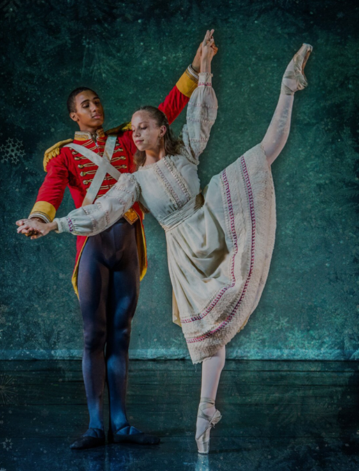
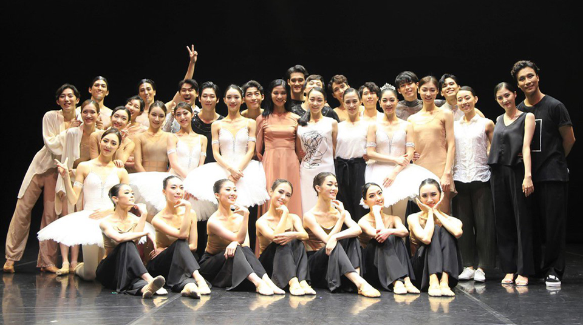
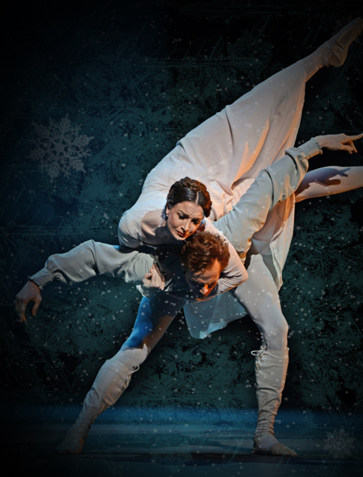
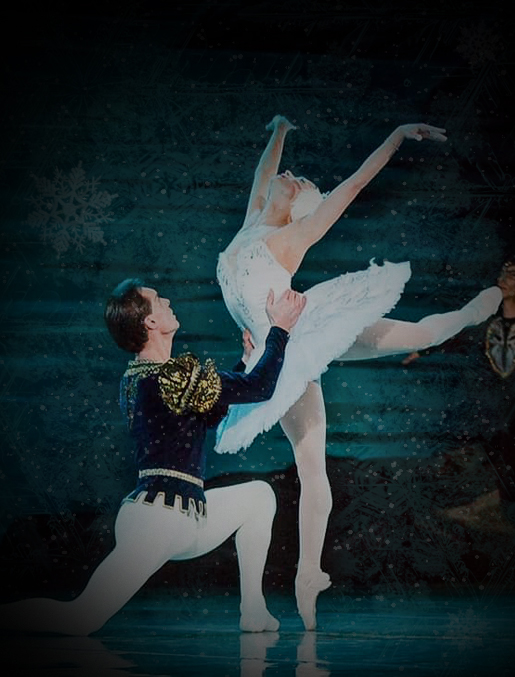
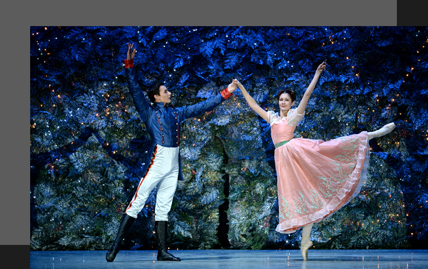

"Snow, winter and ballet"
발레는 음악과 움직임이 하나가 되어 무대 위에 이야기를 만들어냅니다. 차가운 겨울의 풍경과 아름다운 춤을 한 공간에 담아 겨울의 낭만을 표현합니다.
눈처럼 섬세한 움직임, 겨울처럼 깊은 음악과 함께 특별한 발레 공연을 만나보세요.

국립 발레단
한국 발레를 대표하는 국립 발레단의 무대입니다. 클래식 발레의 아름다움과 현대적인 해석을 통해 겨울의 정취를 담은 공연을 선보입니다.
풍부한 표현력과 정교한 테크닉으로 완성된 특별한 겨울 무대를 만나보세요.


2020.12
| 일 | 월 | 화 | 수 | 목 | 금 | 토 |
|---|---|---|---|---|---|---|
| 1 | 2 | 3 | 4 | 5 | 6 | |
| 7 | 8 | 9 | 10 | 11 | 12 | 13 |
| 14 | 15 | 16 | 17 | 18 | 19 | 20 |
| 21 | 22 | 23 | 24 | 25 | 26 | 27 |
| 28 | 29 | 30 | 31 |

백조의 호수 Swan Lake
2020.12.12 ~ 2020.12.19
예술의전당 오페라극장
공연시간 120분 · 인터미션 포함
차이콥스키의 아름다운 음악과 함께 펼쳐지는 클래식 발레의 대표작입니다. 무대와 조명, 의상이 어우러져 겨울밤의 환상적인 분위기를 만들어냅니다.